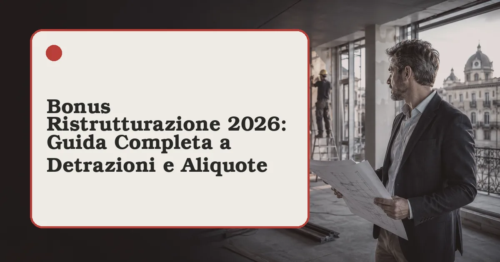

Cos'è il bonus ristrutturazione 2026
Il bonus ristrutturazione è la principale agevolazione fiscale italiana per i lavori edilizi sugli immobili esistenti. Introdotto stabilmente dall'articolo 16-bis del TUIR, consente di detrarre dall'IRPEF una quota delle spese sostenute per interventi di manutenzione straordinaria, restauro, risanamento conservativo e ristrutturazione edilizia su abitazioni e parti comuni condominiali. Dopo la stagione del Superbonus, il bonus ristrutturazione è tornato a essere il pilastro degli incentivi casa: secondo le elaborazioni più recenti su dati ENEA e Agenzia delle Entrate, riguarda ogni anno oltre 700.000 pratiche e muove un mercato da diversi miliardi di euro, con ricadute dirette su imprese edili, artigiani e professionisti.
La Legge di Bilancio ha riformato il quadro delle aliquote introducendo una distinzione destinata a restare strutturale: un'aliquota maggiorata per chi ristruttura la propria abitazione principale e un'aliquota ordinaria più bassa per seconde case e immobili strumentali. L'obiettivo dichiarato del legislatore è concentrare le risorse pubbliche sulla casa di abitazione e contenere l'impatto complessivo delle detrazioni sulla finanza pubblica.
Aliquote e massimali 2026: quanto si recupera davvero
Per le spese sostenute nel 2026 la detrazione è pari al 50% per l'abitazione principale e al 36% per tutti gli altri immobili residenziali. Il massimale di spesa agevolabile rimane fissato a 96.000 euro per unità immobiliare: significa, in concreto, un recupero fiscale massimo di 48.000 euro per la prima casa e di 34.560 euro per le altre unità. La detrazione si ripartisce in 10 quote annuali di pari importo, da indicare nella dichiarazione dei redditi a partire dall'anno di sostenimento della spesa.
| Tipologia immobile | Aliquota 2026 | Massimale spesa | Detrazione massima |
|---|---|---|---|
| Abitazione principale | 50% | 96.000 € | 48.000 € |
| Seconda casa e altre unità | 36% | 96.000 € | 34.560 € |
| Parti comuni condominiali | 36% | 96.000 € per unità | Secondo millesimi |
In prospettiva, la normativa vigente (Legge di Bilancio 2026, L. 199/2025) conferma le aliquote del 50% e del 36% per le spese sostenute nel 2025 e nel 2026; per le spese del 2027 è già prevista una riduzione rispettivamente al 36% e al 30%, sempre entro il massimale di 96.000 euro, salvo ulteriori interventi del legislatore.
Attenzione al requisito dell'abitazione principale: l'immobile deve essere quello in cui il contribuente (o un suo familiare convivente) dimora abitualmente. Se i lavori precedono il trasferimento della residenza, la dimora abituale deve essere instaurata entro termini coerenti con la natura dell'intervento; in caso contrario l'Agenzia delle Entrate può revocare l'aliquota maggiorata e ricalcolare la detrazione al 36%.
Interventi ammessi alla detrazione
L'elenco degli interventi agevolabili è ampio e copre gran parte del lavoro di un cantiere di riqualificazione. Rientrano nel bonus ristrutturazione 2026:
- Manutenzione straordinaria: rifacimento di impianti idraulici, elettrici e di riscaldamento, sostituzione di pavimenti e rivestimenti, rifacimento di bagni e cucine, spostamento di tramezzi non portanti.
- Restauro e risanamento conservativo: interventi su edifici vincolati o di pregio, consolidamento di strutture, recupero di sottotetti e volumi tecnici nel rispetto dei vincoli.
- Ristrutturazione edilizia: demolizione e ricostruzione con la stessa volumetria, modifiche della superficie coperta, cambio di destinazione d'uso, apertura di nuove finestre e varchi.
- Opere di messa in sicurezza: interventi antisismici, bonifica dell'amianto, eliminazione delle barriere architettoniche, installazione di impianti di sicurezza e videosorveglianza.
- Manutenzione ordinaria sulle parti comuni: rifacimento scale, tinteggiatura androni, riparazione del lastrico solare, sostituzione dell'ascensore condominiale.
Per gli interventi di efficienza energetica (cappotto termico, infissi, pompe di calore) il canale naturale resta l'Ecobonus con aliquota dedicata, cumulabile con il bonus ristrutturazione solo nei casi e nei limiti previsti dalla normativa: la stessa spesa non può mai essere agevolata due volte. Va segnalato che dal 2025 le caldaie uniche a combustibili fossili sono escluse dalle detrazioni, spese accessorie e funzionali comprese: restano agevolabili pompe di calore, sistemi ibridi, microcogeneratori e generatori a biomassa. Chi ristruttura può detrarre anche l'acquisto di mobili ed elettrodomestici destinati ad arredare l'immobile ristrutturato: regole, massimale e documenti nella nostra guida al bonus mobili 2026.
Adempimenti e documenti: la checklist del cantiere
La parte amministrativa è quella che fa perdere più bonus di qualsiasi errore tecnico. Per mettere in sicurezza la detrazione servono, nell'ordine:
- Titolo abilitativo: CILA per manutenzione straordinaria e ristrutturazione senza opere strutturali rilevanti, CILA-S o SCIA quando l'intervento interessa le strutture portanti. La manutenzione ordinaria su parti private resta attività edilizia libera.
- Bonifico parlante: bonifico bancario o postale con causale specifica per agevolazioni fiscali, codice fiscale del beneficiario e partita IVA (o codice fiscale) dell'impresa. Sono esclusi contanti, assegni e bonifici ordinari.
- Fatture dettagliate: devono riportare la descrizione dei lavori e, se possibile, la distinzione tra manodopera e materiali, utile anche ai fini IVA agevolata.
- Comunicazione ENEA: obbligatoria entro 90 giorni dalla fine dei lavori solo per gli interventi che incidono sull'efficienza energetica (infissi, impianti termici, coibentazioni).
- Conservazione della documentazione: tutti i documenti vanno conservati per l'intero periodo di detrazione e presentati in caso di controlli.
Nei condomini la pratica passa dall'assemblea e dall'amministratore, che gestisce bonifici e ripartizione per millesimi; il singolo condomino recupera la propria quota in dichiarazione con il codice fiscale del condominio.
Gli errori più comuni che fanno perdere il bonus
Dalle verifiche dell'Agenzia delle Entrate emergono casi ricorrenti di decadenza dell'agevolazione. I più frequenti riguardano il bonifico errato (causale generica o mancanza del codice fiscale), l'inizio dei lavori prima della CILA, la richiesta dell'aliquota del 50% su un immobile che non è abitazione principale e la doppia agevolazione della stessa spesa con due bonus diversi. Un altro errore tipico è superare il massimale considerando il limite come annuale: i 96.000 euro sono un plafond per unità immobiliare, rinnovabile per i periodi d'imposta successivi ma sempre nel rispetto delle regole cumulate indicate dalla prassi.
«La detrazione non si perde in cantiere, si perde in amministrazione: bonifico, titolo edilizio e documentazione valgono quanto i lavori stessi.»
Tempi e scadenze: quando sostenere le spese
Il bonus ristrutturazione vive di date, e la gestione corretta del calendario vale migliaia di euro. La prima regola: la detrazione segue il principio di cassa — conta l'anno del pagamento con bonifico parlante, non quello dei lavori o della fattura. Un acconto a dicembre e un saldo a gennaio si distribuiscono su due anni d'imposta e su due dichiarazioni: pianificare i pagamenti serve a ottimizzare la capienza fiscale anno per anno. La seconda regola riguarda il rapporto con il titolo edilizio: la CILA o il titolo richiesto devono precedere l'inizio lavori, e le date dei pagamenti devono essere coerenti con la sequenza del cantiere — pagamenti anteriori all'avvio formale sono tra le contestazioni più frequenti.
La terza variabile temporale è il massimale mobile: i 96.000 euro valgono per unità immobiliare ma si consumano sommando le spese agevolate negli anni; chi ha già usato il bonus sulla stessa casa deve conteggiare il residuo prima di nuovi lavori. Infine le scadenze esterne: l'invio della comunicazione all'ENEA quando dovuta (90 giorni dalla fine lavori per gli interventi che la richiedono), la conservazione dei documenti per tutto il periodo di detrazione più i termini di accertamento, e il monitoraggio delle leggi di bilancio annuali, che confermano o ritoccano aliquote e requisiti. Il calendario prudenziale di un cantiere detraibile: titolo edilizio → inizio lavori → pagamenti tracciati anno per anno → fine lavori → ENEA entro 90 giorni → dichiarazione dei redditi → archivio per 15 anni.
I casi particolari: locatari, usufruttuari, società
Il bonus non è solo dei proprietari. Il locatario che ristruttura l'appartamento in affitto detrae le spese sostenute con il consenso scritto del proprietario: paga con bonifico proprio, conserva il consenso e la documentazione, e al termine del rapporto i lavori restano al proprietario senza ristoro — per questo conviene concordare per iscritto eventuali compensazioni sul canone. L'usufruttuario e i titolari di diritti reali di godimento detraggo come i proprietari, perché sostengono la spesa su un immobile di cui hanno la disponibilità; il nudo proprietario può detrarre solo se sostiene direttamente le spese nei casi previsti. Il familiare convivente del proprietario — coniuge, parenti entro il terzo grado — detrae se convive e sostiene le spese con bonifico proprio, anche senza titolo sull'immobile.
Sul fronte opposto, le società e gli immobili strumentali all'attività d'impresa seguono regole diverse: gli interventi su immobili strumentali non accedono al bonus ristrutturazione «casa» ma possono beneficiare di altre discipline (ammortamenti, crediti d'imposta per investimenti dove attivi), mentre le società di persone e i professionisti che ristrutturano lo studio seguono i limiti dedicati. Due casi frequenti di contestazione: la casa ceduta in vendita durante il periodo di detrazione — la detrazione residua si trasferisce all'acquirente solo se previsto nell'atto, altrimenti resta al venditore che la perde se non ha capienza; e la variazione di residenza durante i lavori, che va documentata perché l'aliquota prima casa si valuta all'inizio dell'intervento. Per il dettaglio sulle aliquote 50/36 e gli esempi di calcolo, la nostra guida alla detrazione 50% prima casa e 36% seconda casa.
Domande frequenti sul bonus ristrutturazione 2026
Qual è l'aliquota del bonus ristrutturazione nel 2026?
Nel 2026 l'aliquota è del 50% per l'abitazione principale e del 36% per le altre unità immobiliari, con massimale di spesa di 96.000 euro per unità immobiliare e recupero in 10 rate annuali.
Quali lavori rientrano nel bonus ristrutturazione 2026?
Manutenzione straordinaria, restauro e risanamento conservativo, ristrutturazione edilizia, opere antisismiche, messa in sicurezza, bonifica amianto e manutenzione ordinaria sulle parti comuni condominiali.
Come si recupera la detrazione?
In 10 rate annuali di pari importo nella dichiarazione dei redditi. È obbligatorio pagare con bonifico parlante e conservare fatture, titoli abilitativi ed eventuale comunicazione ENEA.
Serve la CILA per accedere al bonus?
Sì, per la gran parte degli interventi agevolabili serve la CILA (o la CILA-S/SCIA per opere strutturali). La sola manutenzione ordinaria su parti private resta in edilizia libera.
Il bonus spetta anche a chi è in affitto?
Sì: il locatario con consenso scritto del proprietario detrae pagando con bonifico proprio. I lavori restano all'immobile: meglio concordare per iscritto eventuali compensazioni sul canone.
Fonti: Agenzia delle Entrate — guida "Ristrutturazioni edilizie: le agevolazioni fiscali"; articolo 16-bis TUIR; Legge di Bilancio vigente; prassi ENEA sulle comunicazioni obbligatorie. Contenuto a scopo informativo: per i casi specifici consultare un professionista fiscale o il sito istituzionale.